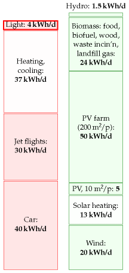
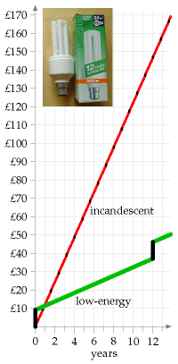
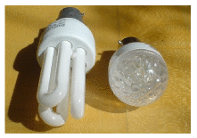

9 Light

Figure 9.1. Lighting – 4 kWh per day per person.
Lighting home and work
The brightest domestic lightbulbs use 250 W, and bedside lamps use 40 W. In an old-fashioned incandescent bulb, most of this power gets turned into heat, rather than light. A fluorescent tube can produce an equal amount of light using one quarter of the power of an incandescent bulb.
| Device | Power | Time per day | Energy per day per home |
|---|---|---|---|
| 10 incandescent lights | 1 kW | 5 h | 5 kWh |
| 10 low-energy lights | 0.1 kW | 5 h | 0.5 kWh |
Table 9.2. Electric consumption for domestic lighting. A plausible total is 5.5 kWh per home per day; and a similar figure at work; perhaps 4 kWh per day per person.
How much power does a moderately affluent person use for lighting? My rough estimate, based on table 9.2, is that a typical two-person home with a mix of low-energy and high-energy bulbs uses about 5.5 kWh per day, or 2.7 kWh per day per person. I assume that each person also has a workplace where they share similar illumination with their colleagues; guessing that the workplace uses 1.3 kWh/d per person, we get a round figure of 4 kWh/d per person.
Street-lights and traffic lights
Do we need to include public lighting too, to get an accurate estimate, or do home and work dominate the lighting budget? Street-lights in fact use about 0.1 kWh per day per person, 1 and traffic lights only 0.005 kWh/d per person 2 – both negligible, compared with our home and workplace lighting. What about other forms of public lighting – illuminated signs and bollards, for example? There are fewer of them than street-lights; 3 and street-lights already came in well under our radar, so we don’t need to modify our overall estimate of 4 kWh/d per person.
Lights on the traffic

Figure 9.3. Total cumulative cost of using a traditional incandescent 100 W bulb for 3 hours per day, compared with replacing it now with an Osram Dulux Longlife Energy Saver (pictured). Assumptions: electricity costs 10p per kWh; replacement traditional bulbs cost 45p each; energy-saving bulbs cost £9. (I know you can find them cheaper than this, but this graph shows that even at £9, they’re much more economical.)
In some countries, drivers must switch their lights on whenever their car is moving. How does the extra power required by that policy compare with the power already being used to trundle the car around? Let’s say the car has four incandescent lights totalling 100 W. The electricity for those bulbs is supplied by a 25%-efficient engine powering a 55%-efficient generator, 4 so the power required is 730 W. For comparison, a typical car going at an average speed of 50 km/h and consuming one litre per 12 km has an average power consumption of 42 000W. So having the lights on while driving requires 2% extra power.
What about the future’s electric cars? The power consumption of a typical electric car is about 5000 W. So popping on an extra 100 W would increase its consumption by 2%. Power consumption would be smaller if we switched all car lights to light-emitting diodes, but if we pay any more attention to this topic, we will be coming down with a severe case of every-little-helps-ism.
The economics of low-energy bulbs
Generally I avoid discussing economics, but I’d like to make an exception for lightbulbs. Osram’s 20 W low-energy bulb claims the same light output as a 100 W incandescent bulb. Moreover, its lifetime is said to be 15 000 hours (or “12 years,” at 3 hours per day). In contrast a typical incandescent bulb might last 1000 hours. So during a 12-year period, you have this choice (figure 9.3): buy 15 incandescent bulbs and 1500 kWh of electricity (which costs roughly £150); or buy one low-energy bulb and 300 kWh of electricity (which costs roughly £30).
Should I wait until the old bulb dies before replacing it?
It feels like a waste, doesn’t it? Someone put resources into making the old incandescent lightbulb; shouldn’t we cash in that original investment by using the bulb until it’s worn out? But the economic answer is clear: continuing to use an old lightbulb is throwing good money after bad. If you can find a satisfactory low-energy replacement, replace the old bulb now.
What about the mercury in compact fluorescent lights? Are LED bulbs better than fluorescents?

Figure 9.4. Philips 11 W alongside Omicron 1.3 W LED bulb.
Researchers say that LED (light-emitting diode) bulbs will soon be even more energy-efficient than compact fluorescent lights. The efficiency of a light is measured in lumens per watt. I checked the numbers on my latest purchases: the Philips Genie 11 W compact fluorescent bulb (figure 9.4) has a brightness of 600 lumens, which is an efficiency of 55 lumens per watt; regular incandescent bulbs deliver 10 lumens per watt; the Omicron 1.3 W lamp, which has 20 white LEDs hiding inside it, has a brightness of 46 lumens, which is an efficiency of 35 lumens per watt. So this LED bulb is almost as efficient as the fluorescent bulb. The LED industry still has a little catching up to do. In its favour, the LED bulb has a life of 50 000 hours, eight times the life of the fluorescent bulb. As I write, I see that www.cree.com is selling LEDs with a power of 100 lumens per watt. It’s projected that in the future, white LEDs will have an efficiency of over 150 lumens per watt [ynjzej]. I expect that within another couple of years, the best advice, from the point of view of both energy efficiency and avoiding mercury pollution, will be to use LED bulbs.
Mythconceptions
“There is no point in my switching to energy-saving lights. The”wasted” energy they put out heats my home, so it’s not wasted.”
This myth is addressed in Chapter 11.
| Bulb type | efficiency (lumens/W) |
|---|---|
| incandescent | 10 |
| halogen | 16-24 |
| white LED | 35 |
| compact fluorescent | 55 |
| large fluorescent | 94 |
| sodium street light | 150 |
Table 9.5. Lighting efficiencies of commercially-available bulbs. In the future, white LEDs are expected to deliver 150 lumens per watt.
The prediction that came true
A section added in the 2026 revision. This chapter ends with a forecast, and it is one of the few in the book that can now simply be marked correct:
I expect that within another couple of years, the best advice, from the point of view of both energy efficiency and avoiding mercury pollution, will be to use LED bulbs.
It happened, faster and more completely than the chapter’s cautious tone suggests. MacKay’s own LED sample managed 35 lumens per watt and he judged that “the LED industry still has a little catching up to do”. Table 9.5 records the expectation that white LEDs would eventually reach 150 lm/W.
What happened to table 9.5
| Bulb type | MacKay, 2008 | 2026 |
|---|---|---|
| incandescent | 10 lm/W | withdrawn from sale |
| halogen | 16–24 lm/W | withdrawn from sale |
| white LED | 35 lm/W | 180–210 lm/W in the best commercial lamps |
| compact fluorescent | 55 lm/W | withdrawn from sale |
| large fluorescent | 94 lm/W | being withdrawn |
| sodium street light | 150 lm/W | superseded by LED |
Every technology in his table except the LED has now been legislated off the market, and the one he thought was behind overtook all of them. LED efficacy has improved by roughly 6 to 8 lumens per watt every year since 2010; the best commercial lamps now test above 200 lm/W, converting more than half their input power into light rather than heat.5
That is six times MacKay’s LED sample, nearly four times his compact fluorescent, and twenty times the incandescent bulb the chapter is written against. His 150 lm/W projection was not optimistic; it was passed.
What it did to this chapter’s number
MacKay estimated 4 kWh/d per person for lighting: 2.7 at home and 1.3 at work, from a household using 5.5 kWh/d on lighting alone.
Put that beside the household of today. Average British domestic electricity consumption has fallen from 4630 kWh a year in 2008 to 3264 in 2023 — about 29% — which is 8.9 kWh/d per household for everything: lighting, cooking, refrigeration, washing, televisions, computers and chargers together.6
MacKay’s lighting estimate alone, 5.5 kWh/d, is nearly two-thirds of what a British household now uses in total. The change per fitting is a reduction of 80 to 90%, so on unchanged habits this chapter’s 4 kWh/d per person would now be something under 1.
Two cautions
The number can no longer be checked properly. The government’s Energy Consumption in the UK series discontinued its Electrical Products tables in the 2025 edition, following concerns about the models underlying the appliance-level estimates. There is no longer an official British breakdown of household electricity by end use, so the figure that replaces MacKay’s 4 kWh/d has to be inferred rather than looked up. This edition has run into the same wall in chapter 8 over reservoir storage: the arithmetic in this book depends on statistics that are, in places, being withdrawn.
And cheap light invites more light — which deserves more than a sentence, because lighting is the single best-documented case of the rebound effect anywhere in energy.
Jevons, where the record is longest
Fouquet and Pearson traced the price and use of light in Britain from 1300 to 2000. The real price of light fell roughly 3000-fold between 1800 and 2000, and consumption rose to about 40 000 times its 1800 level. Per-person consumption of light grew faster than per-person GDP. Across seven centuries, every improvement in lighting efficiency was met by buying more light rather than banking the saving.7
Working from that series, Tsao and Waide put the price and income elasticity of demand for light at close to unity — a 10% fall in price raises consumption by about 10% — and predicted on that basis that solid-state lighting would produce not merely rebound but backfire: total energy spent on lighting rising after the efficiency gain, exactly as Jevons argued for coal in 1865.
Has it? Not in Britain, so far. Domestic electricity per household fell 29% between 2008 and 2023, and lighting is part of why. The reason is one Fouquet and Pearson identified themselves in later work: these elasticities depend on the stage of development. A poor country handed cheap light buys a great deal more of it. A rich country is already lighting everything it wants lit after dark, and further price falls buy diminishing amounts of extra illumination.
So the honest position is a split one: backfire in the historical record and probably still across much of the world; saturation in Britain. This chapter is about Britain, and here the gain has largely been kept.
Decorative lighting is where that saturation argument is weakest, and it is the visible exception on any winter street. Festive displays run for weeks, permanent architectural and garden lighting, illuminated signage and the lighting of things nobody previously thought to light — this is demand that would not exist at incandescent running costs, and it has appeared precisely where saturation says growth should have stopped. It remains a small share of the total, but it is the clearest domestic sighting of Jevons at work, and it is worth noticing that it grew because the running cost approached zero rather than because anyone decided they needed more light.
The street lights are half done
MacKay put public lighting at 0.1 kWh/d per person and set it aside as negligible. It is being converted, and slowly enough to be worth recording.
England’s county councils have committed about £442 million to LED street lighting, and a freedom-of-information survey found only 10 of 29 county schemes complete. Scotland has roughly 900 000 street lights, of which about 35% have been converted. Full national conversion is projected around 2035 — a quarter of a century after this book was written.8
Where it is finished the savings are large. Hertfordshire converted 117 361 lights for a 79% cut in street-lighting emissions and about £6.9 million a year; West Dunbartonshire cut its street-lighting electricity by 65%.
So MacKay’s 0.1 kWh/d per person is on its way to something nearer 0.03. The interesting part is why it is taking so long, and it is the mirror image of the bulb. A street light is not a drop-in replacement bought by a householder for four pounds. It is a municipal capital programme, twenty-nine of them, each with its own budget cycle, procurement and borrowing constraint. The technology was ready in about 2012. The institutions were not.
Why this one worked
It is worth asking why lighting was solved so completely when heating, in chapter 7, was not. The answer is not that the physics was easier — a heat pump beats a boiler by a wider margin than an LED beats an incandescent in primary-energy terms.
It is that a light bulb is a drop-in replacement. It costs a few pounds, screws into the fitting that is already there, needs no installer, no survey, no wet system, no cylinder, no planning, and no favourable ratio between two fuel prices. Nothing about the building has to change. Chapter 7’s machine has to overcome all of those at once.
The lesson is not about lamps. It is that the energy transitions that actually complete are the ones that fit into the socket that is already in the wall.
Notes and further reading
page no.
Street-lights use about 0.1 kWh per day per person… There’s roughly one sodium street-light per 10 people; each light has a power of 100 W, switched on for 10 hours per day. That’s 0.1 kWh per day per person.↩︎
… and traffic lights only 0.005 kWh/d per person. Britain has 420 000 traffic and pedestrian signal light bulbs, consuming 100 million kWh of electricity per year. Shared between 60 million people, 100 million kWh per year is 0.005 kWh/d per person.↩︎
There are fewer signs and illuminated bollards than street-lights. [www.highwayelectrical.org.uk]. There are 7.7 million lighting units (street lighting, illuminated signs and bollards) in the UK. Of these, roughly 7 million are street-lights and 1 million are illuminated road signs. There are 210 000 traffic signals. According to DUKES 2005, the total power for public lighting is 2095 GWh/y, which is 0.1 kWh/d per person.↩︎
55%-efficient generator – source: en.wikipedia.org/wiki/Alternator. Generators in power stations are much more efficient at converting mechanical work to electricity.↩︎
Best commercial LED lamps tested above 200 lumens per watt, with 2025-model lamps commonly at 180 lm/W and the best measured at 210; the long-run improvement is about 6–8 lm/W per year since 2010, with fleet-average efficacy around 107 lm/W in 2020. Figures are for the lamp, not the luminaire, and manufacturers quote under laboratory conditions at rated drive current and 25°C; a lamp in a warm enclosed fitting will do worse. Note also that efficacy is traded against colour rendering, so the highest-efficacy products are not always the ones people want in a living room. The withdrawal dates differ by jurisdiction and product class — incandescent, then mains-voltage halogen, then compact fluorescent and now linear fluorescent tubes have been progressively removed from the EU and UK markets under ecodesign and hazardous-substances rules — and specific dates are not given here because they vary by lamp type and by country.↩︎
Household electricity consumption from the Department for Energy Security and Net Zero: an average of 4630 kWh per household in 2008 against 3264 kWh in 2023, a fall of about 29%, attributed to more efficient appliances, better lighting and tighter product standards. The per-fitting reduction of 80–90% from replacing incandescent and halogen lamps with LEDs is an industry figure rather than a metered one. The Energy Consumption in the UK Electrical Products tables, which previously gave the appliance-level split including lighting, were discontinued in the 2025 edition over concerns about the underlying models; the lighting figure quoted here for today is therefore an inference from the per-fitting saving and not an official statistic.↩︎
Roger Fouquet and Peter J. G. Pearson, “Seven Centuries of Energy Services: The Price and Use of Light in the United Kingdom (1300–2000)”, The Energy Journal 27(1), 2006, and their later “The Long Run Demand for Lighting: Elasticities and Rebound Effects in Different Phases of Economic Development”, 2012, which is the source for elasticities varying with development stage. The unit-elasticity estimate and the backfire prediction for solid-state lighting are from J. Y. Tsao and P. Waide (2010). Two cautions on the 40 000-fold figure: it is consumption of lighting services in lumen-hours, not energy, and it is reconstructed from price and income series over centuries, so it carries wide uncertainty at the early end. The claim that Britain has so far avoided backfire rests on aggregate household electricity rather than on metered lighting, which as noted above is no longer separately published.↩︎
LED street-lighting conversion figures are from a freedom-of-information survey of English county councils reported in 2025 — about £442 million committed and 10 of 29 county schemes complete — together with Scottish Futures Trust figures of roughly 900 000 Scottish street lights and about 35% converted, and individual council announcements (Hertfordshire 117 361 lights, 79% emissions reduction, about £6.9 million a year; Staffordshire 47 955 lights in phase one; West Dunbartonshire 65% electricity reduction). These are self-reported council figures on differing baselines and are not a consistent national statistic; the 2035 completion date is a projection rather than a plan. Note also that England’s county councils are not the whole country — unitary authorities, London boroughs and Wales are not covered by that survey.↩︎